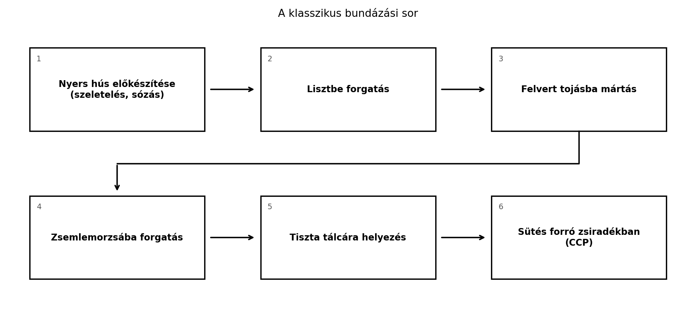

Szombati ebédidő van a vendéglőben. Az egyik vendég rántott csirkét rendel, a másik párizsi csirkemellet, a harmadik natúr csirkemellet, a negyedik grillezett pulykamellet, az ötödik pedig kacsamellet rózsaszínre és libamájat előételnek. Mindegyik tételhez ugyanaz kell: jól előkészített, friss alapanyag, pontos hőmérséklet és fegyelmezett munkaszervezés. Ha a szakács a bundázási sort nem állítja össze előre, a panír leesik a húsról. Ha a serpenyőben túl hideg vagy túl forró a zsiradék, a csirke nyers marad vagy megég. Ha a kacsamellet nem hűti vissza gyorsan, a rózsaszínre sütés kockázatot jelent.
Képzeld el a tankonyha előkészítő asztalát. Balról jobbra három tálca áll: az elsőben liszt, a másodikban felvert tojás, a harmadikban zsemlemorzsa. Mellettük egy tiszta tálca a panírozott húsnak. A tűzhelyen serpenyőben olaj melegszik, mellette maghőmérő, tiszta tányér és papírtörlő. A pult túlsó oldalán nyers csirkecombok, csirkemell- és pulykamellfilék, kacsamell és libamáj vár az előkészítésre. A munkaterület világos, a nyers és a kész étel útja nem keresztezi egymást.
Definíció. A frissen sütés (angolul pan-frying vagy shallow frying, franciául sauter / poêler) olyan száraz hőkezelési eljárás, amelyben a húst kevés – jellemzően 1–2 cm mély – forró zsiradékban, serpenyőben vagy sütőtepsiben, magas hőmérsékleten sütjük, gyakori fordítással vagy egyszeri megfordítással.
Szabály. A frissen sütés lényege: a hús felületén gyorsan kéreg alakuljon ki (Maillard-reakció), a belső hőmérséklet pedig elérje a biztonságos értéket anélkül, hogy a hús kiszáradna. A kéreg ízt, színt és állagot ad, valamint részben visszatartja a nedvességet.
A frissen sütéssel készülő szárnyasételek csoportosítása:
| Csoport | Jellegzetes ételek | Jellemző előkészítés |
|---|---|---|
| Bundázott, frissen sütött | Rántott csirke, párizsi csirkemell | Liszt–tojás–morzsa panír; liszt–tojás panír |
| Natúr, frissen sütött | Natúr csirkemell, natúr pulykamell | Szeletelés, sózás, lisztezés vagy anélkül |
| Grillezett | Grillezett csirke- és pulykamell | Pácolás, olajos kenés, bordázott serpenyőben sütés |
| Különleges | Kacsamell rózsaszínre | Bőr beirdalása, lassú zsírkiolvasztás, húsoldal rövid sütése |
| Belsőség | Libamáj sütése | Szeletelés, lisztezés, forró serpenyőben gyors sütés |
Szabály. A klasszikus panír három állomásból áll: liszt → tojás → zsemlemorzsa. Mindegyik rétegnek külön feladata van. A liszt megszárítja a hús felületét, és tapadóréteget ad a tojásnak. A tojás fehérjéje a hő hatására megalvad, és összeköti a morzsát a hússal. A zsemlemorzsa ropogós kérget alkot.
Tilos. A panírozott nyers húst a nyers húsos tálcára tenni vissza. A panírozott hús felületén már tojás és liszt is van, ami a keresztszennyeződést fokozza.

Higiénia. A bundázóállomást a nyers baromfi mellé kell helyezni, nem a készételek közelébe. A lisztes, tojásos, morzsás kezet minden munkafázis után meg kell mosni. A bundázáshoz használt tálcákat és eszközöket használat után azonnal mosogatni kell.
Allergén. A klasszikus rántott csirke panírja glutént tartalmazó gabonafélét (liszt, zsemlemorzsa) és tojást tartalmaz. A liszt és a zsemlemorzsa különböző gabonából is készülhet; a vendéget tájékoztatni kell, ha például a morzsa rozslisztet vagy búzakeményítőt is tartalmaz. A panírban lévő tojás is jelölésköteles allergén.
Szabály. A frissen sütéshez a zsiradékot a sütés előtt fel kell hevíteni. A megfelelő hőmérsékletet úgy ellenőrizhetjük, hogy egy kis darab kenyérkockát dobunk az olajba: ha körülötte azonnal apró buborékok képződnek, az olaj sütésre kész. Az üzemi gyakorlatban a zsiradék hőmérsékletét maghőmérővel vagy infra-hőmérővel is ellenőrizhetjük (ellenőrizendő: konkrét hőfok, NÉBIH-útmutató / üzemi HACCP-terv).
Kritikus pont. A baromfihúst – a kacsamellet is, ha nem rózsaszínre sütjük – addig kell hőkezelni, amíg a maghőmérséklete a vastagabb részbe szúrt maghőmérővel mérve eléri a biztonságos értéket. A hagyományos tanulási érték csirke és pulyka esetén 75 °C (ellenőrizendő: NÉBIH-útmutató / hatályos rendelet / üzemi HACCP-terv). A hús levének tisztának kell lennie, és a rostok sérülésekor nem szabad rózsaszínű lének kifolynia. A maghőmérő a legmegbízhatóbb ellenőrzés.
Szabály. A frissen sütött baromfit tálalás előtt 2–3 percig pihentetni kell, hogy a rostokban lévő nedvesség újra eloszoljon, és a hús ne folyjon szét szeleteléskor. A pihentetés a hőkezelés befejező szakasza; a hús belső hőmérséklete ezalatt általában még 1–2 °C-ot emelkedik.
Adagszám: 10 adag Adagsúly: kb. 200 g kész étel
| Nyersanyag | Mennyiség 10 adagra | Megjegyzés |
|---|---|---|
| Csirkecomb (egész, csonttal) | 1,8 kg | bruttó, bőrrel, csonttal |
| BL55 finomliszt | 150 g | panírhoz; allergén: glutén |
| Tojás | 5 db (kb. 250 g) | panírhoz; allergén: tojás |
| Zsemlemorzsa | 300 g | panírhoz; allergén: glutén |
| Étolaj vagy sertészsír | 600 ml | sütéshez |
| Só | 20 g | ízlés szerint |
| Fokhagyma | 3 gerezd | opcionális |
| Fehérbors | 2 g | opcionális |
Allergének: glutént tartalmazó gabonafélék (liszt, zsemlemorzsa), tojás. A sütőzsiradékra is figyelni kell, ha vendég szójára vagy földimogyoróra allergiás, mert az étolaj keverék lehet (a finomított olajok jelölési szabályai ellenőrizendők a termék címkéjén; a földimogyoró és a diófélék, például a törökmogyoró, külön allergéncsoport).
Eszközök és gépek: vágódeszka, csontozókés, húsklopfoló, 3 db tálca a panírhoz, 1 db tiszta tálca, serpenyő vagy nagyobb lábas, hőmérő (maghőmérő és olajhőmérő), csipesz, tiszta tányér, papírtörlő, sütőrács.
Előkészítés:
Elkészítés:
Kritikus pontok: A csirke maghőmérséklete a vastagabb részben 75 °C legyen (ellenőrizendő). A sütéshez használt zsiradék hőmérséklete ne legyen túl alacsony, mert a panír magába szívja a zsiradékot, és a hús nem sül át. A panírozott nyers hús ne érintkezzen kész étellel. A panírhoz használt tojás és liszt ne kerüljön más ételbe. A sütőzsiradékot ne használjuk újra korlátlanul; a használt zsiradék tárolására az üzemi HACCP-terv az irányadó (ellenőrizendő: tárolási idő, hőmérséklet).
Készentartás és tálalás: A rántott csirkét frissen sütve tálaljuk, lehetőleg azonnal. Ha készentartás szükséges, 63 °C fölött, rövid ideig tartható (ellenőrizendő: készentartási hőmérséklet, idő). Hagyományos köret: petrezselymes burgonya, rizs vagy rizi-bizi, savanyúsággal. A tálaláshoz tiszta eszközöket használjunk, a nyers húshoz használt eszközöket ne érintsük meg.
Minőségi követelmények: A panír aranybarna, ropogós, egyenletes vastagságú, nem válik el a hústól. A csirkehús puha, szaftos, teljesen átsült, a csont körül nem rózsaszín. A kész étel zsírtartalma nem túlzott, a panír nem ázott. A hús íze enyhén sós, a fokhagyma és a bors nem nyomja el a csirke ízét.
Tipikus hibák és javításuk: (lásd a fejezet későbbi részét)
Változatok: Rántott csirkemell, rántott csirke szárny, rántott pulykamell. Lehet fűszeres panírt készíteni (pl. fokhagymapor, pirospaprika, szárított oregánó), de a panír a klasszikushoz képest nem tartalmazhat olyan összetevőt, amely a vendég allergiáját érinti.
Definíció. A párizsi csirkemell – a magyar konyha liszt–tojás bundás sütési módja – kicsontozott, bőr nélküli csirkemellfilé, amelyet liszttel és tojással panírozunk, de zsemlemorzsát nem kap. A liszt–tojás panír vékony, enyhén ropogós kérget ad, amely nem takarja el a hús ízét.
Eljárás lépésenként:
Az 1. lépés dönti el, hogy a szelet egyenletesen sül-e át. A klopfolás helyes módját és a tipikus hibát a rajz mutatja.
A vastag mellrészt előbb vízszintesen kettévágod (1), majd két fólia között, a klopfoló lapos oldalával, középről kifelé ütögeted (2). A cél az egyenletes, kb. 0,7–1 cm vastagság (3; tájékoztató érték, ugyanaz, mint a Húsok előkészítése: bontás, csontozás, formázás munkalapján); a pontos értéket az üzemi technológiai lap adja meg. Ha csak a széleket ütöd, a szél elvékonyodik, a közép vastag marad (4): mire a közép eléri a biztonságos maghőmérsékletet, a szél kiszárad. A HTML-kiadásban a helyes és a hibás változat között lapozhatsz.
Allergén. A párizsi csirkemell panírja glutént (liszt) és tojást tartalmaz.
Definíció. A natúr frissen sütött hús (angolul pan-fried, franciául sauté) olyan szelet vagy filé, amelyet sózáson, borsozáson és esetleg nagyon vékony lisztezésen kívül semmilyen bundával nem vonnak be. A cél a hús természetes ízének és barna kérgének megmutatása.
Eljárás:
Megjegyzés. A natúr pulykamell alapanyaga sűrűbb rostú, mint a csirkemell, ezért a hőkezelésre gyakran 1–2 perccel több idő kell. A vékonyra klopfolt pulykamell gyorsabban átsül, de ha túl vékony, könnyen kiszárad.
Allergén. A natúr hús liszt és vaj nélkül nem tartalmaz jelölésköteles allergént; vajjal sütve tej allergén. Az üzemi gyakorlatban a sütőzsiradék és a tálalóeszközök is keresztszennyeződést okozhatnak; a pontos allergéntájékoztatáshoz az üzemi HACCP-tervet kell követni.
Definíció. A grillezés (angolul grilling, franciául griller) magas hőmérsékletű, száraz hőkezelés bordázott serpenyőben, grillrácson vagy kontaktgrillben. A bordázott felület jellegzetes csíkokat és enyhén füstös ízt ad a húsnak.
Eljárás:
Higiénia. A grillrácsot vagy grillserpenyőt minden használat előtt és után tisztítani kell. A nyers baromfi folyadéka nem csöpöghet más élelmiszerre. A páclét, amely nyers hússal érintkezett, nem szabad a kész húsra önteni, kivéve, ha utólag felforraljuk (ellenőrizendő: pác-hőkezelés szabálya).
Definíció. A kacsamell rózsaszínre sütése (franciául magret de canard rosé) olyan különleges frissen sütési eljárás, amelyben a kacsamell bőrös oldalát lassan, a saját zsírjában kisütjük, a húsos oldalát rövid ideig sütjük, és a húst rózsaszín maghőmérsékletűre hagyjuk. A rózsaszínre sütött kacsamell nem tekinthető teljesen átsütött húsnak, ezért sérülékeny csoportoknak fogyasztása kockázatos lehet.
Eljárás lépésenként:
A nagyított metszet a beirdalás mélységét mutatja: a kés a bőrön és a zsíron megy át, a húst nem érinti, különben a hús leve kifolyik a serpenyőbe. A képsor számai az eljárás 1., 3., 4–5. és 6. lépésének felelnek meg. A ✗ kép két tipikus hibát mutat: beirdalás nélkül vagy túl erős tűzön a zsír nem olvad ki, túl hosszú sütéssel pedig a hús szürke és rágós lesz. A HTML-kiadásban a lépéseket egyenként lapozhatod.
Higiénia. A kacsamell rózsaszínre sütése szándékos kockázatvállalás, ezért az üzemben a HACCP-tervben kockázatos technológiaként kell kezelni. A vendéget tájékoztatni kell arról, hogy a hús nem teljesen átsült; sérülékeny csoportok (várandós, kisgyermek, idős, legyengült immunrendszerű) fogyasztása fokozott kockázattal jár. A hús előkészítéséhez használt eszközök ne érintkezzenek kész étellel. A húst a feldolgozásig hűtve kell tárolni (ellenőrizendő: hűtési hőmérséklet).
Definíció. A libamáj sütése (franciául foie gras poêlé) olyan rövid ideig tartó frissen sütési eljárás, amelyben a májat szeletelve, forró serpenyőben, kevés zsiradékkal sütjük. A biztonságos alapváltozat a teljes átsütés (legalább 75 °C maghőmérséklet, ellenőrizendő: HACCP-terv); a hagyományos, belül krémes, enyhén rózsaszín középpontú változat kockázatos technológia, csak az alábbi Higiénia-bekezdés feltételeivel tanítható.
Eljárás (alapváltozat: teljesen átsütve; a rózsaszín változat kockázatos kivétel):
Higiénia. A libamáj rózsaszínre sütése kockázatos technológia: a baromfimáj belsejében is lehetnek kórokozók (pl. Campylobacter), ezért a frissen sütött máj nem tekinthető teljesen hőkezelt állati terméknek. A „friss” máj nem kontrollintézkedés, mert a kórokozó a friss májban is jelen lehet, és a kockázat sütéssel rózsaszínre nem szüntethető meg. Csak a HACCP-tervben kockázatos technológiaként rögzített feltételekkel (minősített beszállító, ellenőrzött eredet és hűtés, a vendég tájékoztatása) adható (ellenőrizendő: NÉBIH-útmutató / HACCP-terv); sérülékeny csoportnak (várandós, kisgyermek, idős, legyengült immunrendszerű) nem adható. A biztonságos alapváltozat a Húsból és belsőségből készülő meleg előételek, meleg vegyes ízelítő alfejezet szerinti teljes átsütés (legalább 75 °C maghőmérséklet, ellenőrizendő: HACCP-terv). A máj felületének és a munkafelületnek tisztának kell lennie, a kés és a vágódeszka használat után azonnal fertőtlenítendő.
Számítási példa 1: Bundázóállomás átszámítása 10 adagról 25 adagra.
Adott: A rántott csirke technológiai lapja 10 adagra 5 db tojást, 150 g lisztet és 300 g zsemlemorzsát ír elő. A konyhán 25 adagot kell készíteni.
Keresett: A szükséges mennyiség 25 adagra.
Képlet: , ahol az új adagszám, a megadott adagszám.
Behelyettesítés:
Tehát a tojás szükséglet: . A liszt szükséglet: . A zsemlemorzsa szükséglet: .
Ellenőrzés: A tojás mennyisége nagyságrendileg 12–13 db, ami 25 adaghoz reális. A liszt és a morzsa aránya nem változott: .
Számítási példa 2: Tömegváltozás a bundázásnál.
Adott: 10 adag rántott csirkéhez 1800 g bruttó (csontos) csirkecombot vettünk. A panírozott nyers hús tömege sütés előtt 2100 g, a kész (megsült, csontos) étel tömege 2000 g.
Keresett: (1) a panír tömege; (2) a sütés közbeni tömegváltozás a panírozott tömegre vetítve; (3) a kész étel tömegnövekedése a bruttó tömeghez képest.
Képletek: a panír tömege ; a sütési tömegváltozás ; a bruttóhoz viszonyított tömegnövekedés .
Behelyettesítés:
Tehát a panír és a felvett zsiradék 300 g-ot adott a csirkéhez, a sütés közben a panírozott hús tömegének kb. 4,8 %-a párolgott el, és a kész étel 11,1 %-kal nehezebb a bruttó combnál. (A csont és a bőr hulladékát ez a példa nem választja le, ezért itt nem is számolunk nettó tömeggel; a nettó tömeg a tisztított nyers hús tömege.)
Ellenőrzés: A kész étel tömege nagyobb, mint a nyers csirke tömege, mert a panír és a zsiradék hozzáadódik; a sütési veszteség kisebb, mint a panír és a zsiradék többlete. Ez a frissen sütött bundázott ételeknél jellemző.
Cél: A tanuló önállóan elkészítsen 2 adag rántott csirkemellet, ellenőrizze a bundázási sorrendet, a zsiradék hőmérsékletét és a hús maghőmérsékletét, valamint dokumentálja a kritikus pontokat.
Eszközök és anyagok: vágódeszka, csontozókés, 3 tálca a panírhoz, 1 tiszta tálca, serpenyő, maghőmérő, olajhőmérő vagy kenyérkocka, papírtörlő, sütőrács, csipesz, mosogatószer, kézfertőtlenítő. Alapanyagok: 2 db csirkemellfilé, 30 g liszt, 1 db tojás, 60 g zsemlemorzsa, 100 ml étolaj, só, bors.
Biztonsági korlát: Ezt a műveletet tankonyhán vagy oktatói felügyelettel gyakorold; otthon csak a leírt biztonsági feltételekkel. A forró zsiradék égési sérülést okozhat; a zsiradéktüzet tilos vízzel oltani.
Higiéniai előkészület:
Számozott lépések:
Ellenőrzési pontok:
Dokumentálás: A tanuló munkalapon rögzíti a sütés kezdetét, a maghőmérsékletet, a sütési időt, a zsiradék hőmérsékletét, és a higiéniai ellenőrzések eredményét. Az üzemi gyakorlatban a HACCP-nyilvántartást az üzemi előírás szerint kell kitölteni.
A frissen sütött szárnyasételek minőségét érzékszervi és mérhető jelekkel egyaránt ellenőrizni kell:
Hiba: A panír leesik a húsról sütés közben. Ok: A hús nedves volt, vagy a panír sorrendje rossz, vagy a húst túl sokáig tárolták panírozva, így a morzsa megnedvesedett. Javítás: A húst mindig szárazra törölni, a panír sorrendjét betartani, a panírozott húst azonnal sütni. Ha a panír megsérült, a húst ne panírozzuk újra ugyanazzal a panírral; készítsünk friss panírt.
Hiba: A csirke kívül megégett, de belül nyers maradt. Ok: A zsiradék túl forró volt, a hús túl vastag, vagy a hőfokot nem mérsékeltük a sütés közben. Javítás: A zsiradékot mérsékelt hőfokon tartani, a húst egyenletes vastagságúra klopfolni, szükség esetén a sütőben befejezni a hőkezelést. Mindig maghőmérővel ellenőrizzük a kész húst.
Hiba: A natúr csirkemell száraz és rágós. Ok: Túl magas hőfokon, túl hosszú ideig sütöttük, vagy a húst nem pihentettük. Javítás: A húst közepes-magas hőfokon, rövid ideig sütni, a maghőmérsékletet folyamatosan ellenőrizni, és a kész húst pihentetni.
Hiba: A kacsamell bőre nem ropogós, a zsír nem olvadt ki. Ok: A bőrt nem irdaltuk be, vagy a serpenyő hőfoka túl magas volt, így a bőr megégett, mielőtt a zsír kiolvadt volna. Javítás: A bőrt mindig beirdalni, és hideg vagy alacsony hőfokú serpenyőbe tenni bőrös oldalával lefelé, lassú tűzön sütni.
Hiba: A libamáj keserű vagy túlsült, szivacsos. Ok: Túl alacsony hőfokon, túl hosszú ideig sütöttük, vagy a májat a sütés előtt nem hűtöttük megfelelően. Javítás: A májat forró serpenyőben, rövid ideig sütni, a hűtési láncot betartani. A keserű íz a májban lévő epe maradványától is eredhet, ezért az előkészítésnél az epét gondosan el kell távolítani.
Egy étterem konyháján a tanuló rántott csirkét készített. A zsiradékot túl magas hőfokra hevítette, ezért a panír azonnal megégett. A tanuló, hogy a panírt megmentse, a húst gyorsan megfordította, de a csirke belseje továbbra is nyers maradt. A séf megkérte, hogy mutassa meg a húst: a maghőmérő csak 48 °C-ot mutatott. A séf utasította, hogy a húst sütőben, 180 °C-on fejezze be a hőkezelést, amíg a maghőmérséklet el nem éri a 75 °C-ot. A tanuló így megértette: a frissen sütésnél a zsiradék hőmérséklete és a hús belső hőmérséklete két külön ellenőrzési pont, és egyik sem hanyagolható el.
1. feladat (A) Sorold fel a frissen sütéssel készülő szárnyasételek csoportjait, és mindegyikhez mondj egy-egy példát.
2. feladat (A) Mely allergének találhatók a klasszikus rántott csirke panírjában?
3. feladat (B) Rendezd helyes sorrendbe a bundázási lépéseket: zsemlemorzsa, liszt, tojás, tiszta tálcára helyezés, sózás, sütés.
4. feladat (B) A technológiai lap 10 adag rántott csirkéhez 5 db tojást ír elő. Mennyi tojás kell 35 adaghoz?
5. feladat (C) Egy vendég gluténérzékeny. Hogyan tudnál rántott csirkemellet készíteni számára? Írd le a helyettesítő panír lehetséges összetevőit, és a keresztszennyeződés elkerülésének lépéseit.
6. feladat (D) Készíts munkatervet 4 adag grillezett pulykamell elkészítéséhez. Tüntesd fel az előkészítést, a pácolást, a sütést, a maghőmérséklet-ellenőrzést és a tálalást, az időpontokkal együtt.
1. feladat (A) - Bundázott: rántott csirke, párizsi csirkemell. - Natúr: natúr csirkemell, natúr pulykamell. - Grillezett: grillezett csirke- és pulykamell. - Különleges: kacsamell rózsaszínre. - Belsőség: libamáj sütése.
2. feladat (A) Glutént tartalmazó gabonafélék (liszt, zsemlemorzsa) és tojás.
3. feladat (B) Sózás → liszt → tojás → zsemlemorzsa → tiszta tálcára helyezés → sütés.
4. feladat (B) Adott: 10 adaghoz 5 db tojás. Keresett: 35 adag. Szorzószám: . Tojás: . Ellenőrzés: db, ami kerekítve 5 db.
5. feladat (C) Gluténmentes panír lehetséges összetevői: gluténmentes liszt vagy kukoricaliszt, tojás, gluténmentes zsemlemorzsa vagy darált kukoricaliszt, puffasztott rizs, esetleg darált diófélék (allergén-ellenőrzéssel). Lépések: a húshoz külön, tisztított felületet és eszközöket kell használni; a panír hozzávalói külön tálcán; a sütőzsiradék külön edényben, mert a korábban használt olaj glutént tartalmazhat; a kész étel tálalásához tiszta eszközt, külön tálalóedényt használjunk; a vendéget tájékoztatni kell a keresztszennyeződés kockázatáról, és soha ne ígérjünk teljes gluténmentességet, ha az üzemi folyamat nem garantálja.
6. feladat (D) Példa munkaterv (óra:perc): - 08:00 – Előkészítés: pulykamell vágása, enyhe klopfolás, sózás, borsozás, olajos pácolás. - 08:15 – Hűtőben pácolás 08:45-ig. - 08:45 – A grillserpenyő felhevítése. - 08:50 – A hús sütése az első oldalon 3–4 percig, majd 90°-os fordítás 2–3 percre. - 08:56 – A hús megfordítása, sütés a második oldalon 3–4 percig. - 09:00 – Maghőmérséklet-ellenőrzés (75 °C, ellenőrizendő). - 09:02 – Pihentetés 2–3 percig. - 09:05 – Szeletelés és tálalás.
A frissen sütéssel készülő szárnyasételek közé tartozik a rántott csirke, a párizsi csirkemell, a natúr és grillezett csirke- és pulykamell, a kacsamell rózsaszínre sütése és a libamáj sütése. A klasszikus panír sorrendje liszt → tojás → zsemlemorzsa; mindegyik rétegnek külön feladata van. A sütéshez a zsiradékot előre fel kell hevíteni, a húst pedig maghőmérővel kell ellenőrizni: csirke és pulyka esetén a tanulási érték 75 °C (ellenőrizendő: konkrét érték). A kacsamell rózsaszínre sütése szándékos kockázatvállalás: a maghőmérséklet 55–58 °C, és sérülékeny csoportoknak nem ajánlott (ellenőrizendő). A libamájat alapváltozatban legalább 75 °C maghőmérsékletig sütjük; a rózsaszín, oldalanként 40–60 másodperces változat kockázatos technológia, csak feltételekkel. A frissen sütés során a nyers hús és a kész étel útját külön kell tartani, a panír allergénjei a glutén és a tojás. Továbbvitt eredmény. A frissen sütés szabályai szárnyasnál – a forró zsiradékban kialakuló kéreg, a maghőmérséklet-ellenőrzés, a pihentetés és a keresztszennyeződés elkerülése – a(z) Párolással és főzéssel készülő szárnyasételek alfejezetben térnek vissza, ahol ezeket a szabályokat zárt edényben, nedves hőkezeléssel kombináljuk.